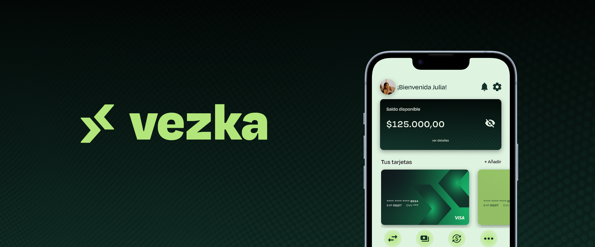
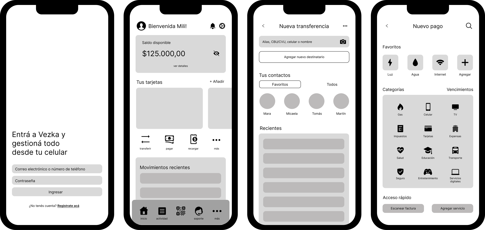
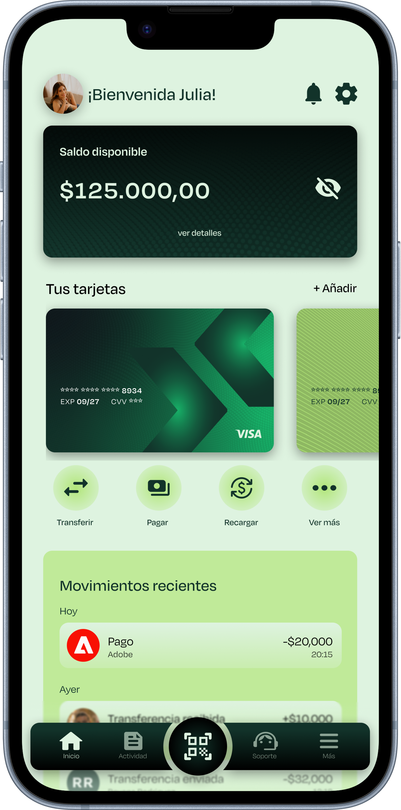
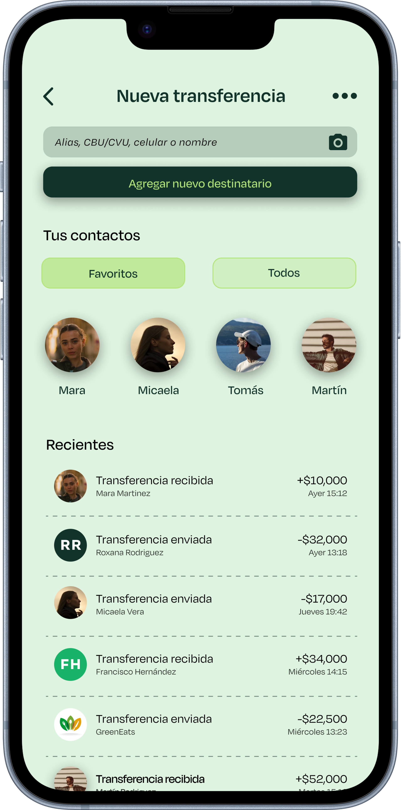
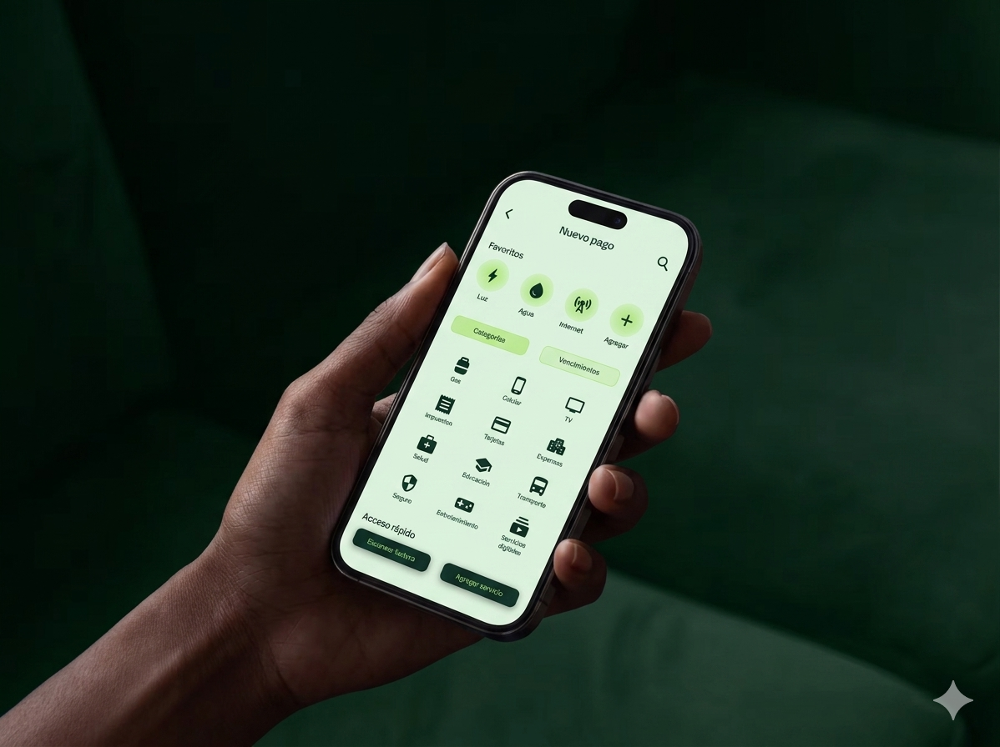
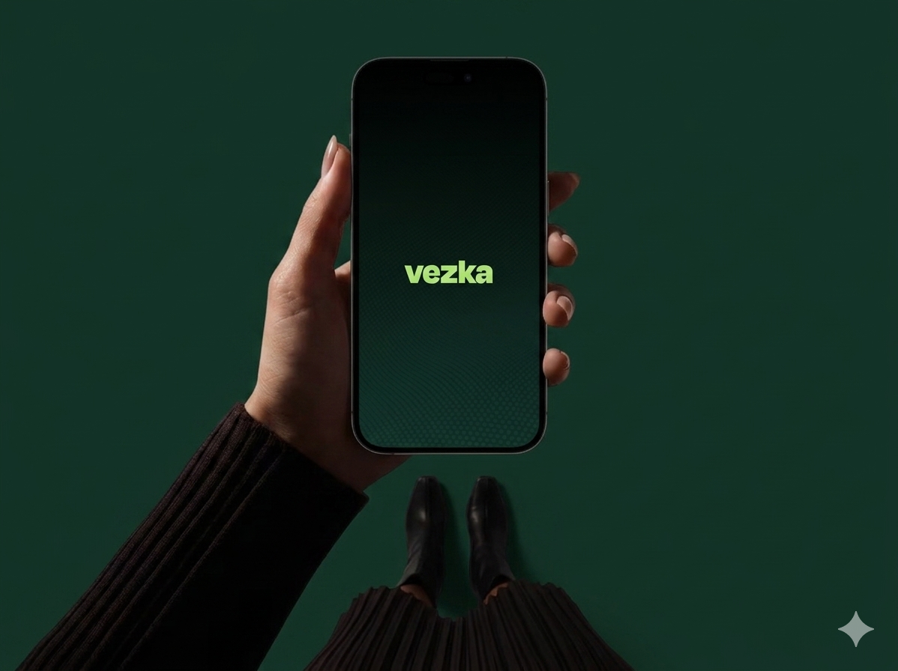
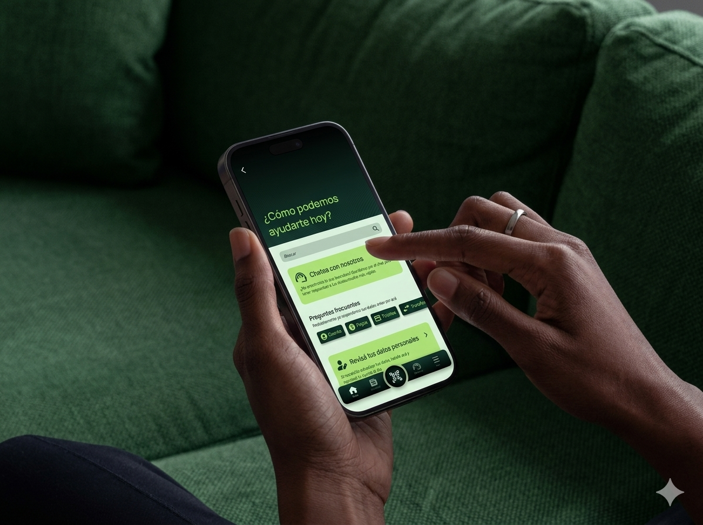

A comprehensive digital banking solution focused on financial inclusion, intuitive design, and seamless user flows.

Vezka is a digital banking platform designed to streamline financial management by integrating accounts, payments, and cards into a single, cohesive ecosystem. The project focused on creating an intuitive digital experience tailored for individuals, freelancers, and small businesses who demand simplicity, transparency, and absolute control over their finances. As the sole designer, I led the entire product lifecycle from conducting user research and defining the information architecture to crafting wireframes, interactive prototypes, and the final high-fidelity visual design.
[The Problem] Many users, especially those with limited time or mobility, find it difficult to manage their finances or open bank accounts in person.
[The Goal] Design an intuitive and secure mobile banking app that allows users to open and manage their accounts quickly and efficiently from anywhere.
Through secondary research and user interviews, I analyzed how users manage their accounts and navigate current banking limitations. While I initially assumed transaction speed was the main user need, findings showed that transparency, accessible support and security were equally important. These insights shifted the focus toward building an intuitive, trustworthy, and highly inclusive mobile experience.
Users find it difficult to locate key features like transfers or card settings.
Hidden fees or unclear costs generate distrust.
Users with little time or mobility struggle to visit physical branches.
Automated responses without human touch make users feel unsupported.
“I want my bank to be as flexible and agile as my work. If everything is online, why shouldn’t my finances be too?”
Camila is a 26-year-old freelance designer managing her own fluctuating income. She needs a frictionless, fully remote mobile banking experience to achieve total financial control and eliminate time-consuming in-person bureaucracy.
To focus the design direction, I synthesized the user research into clean, actionable problem statements that adress the specific core needs of each user profile:
Camila needs a frictionless mobile onboarding process because managing physical paperwork and visiting traditional bank branches conflicts directly with her freelancing hours.
Martín needs a centralized, highly efficient digital ecosystem because managing separate accounts and slow banking interfaces wastes his limited personal and family time.
Elena needs an intuitive banking interface with clear typography and straightforward support because complex digital navigation and automated chat systems cause high anxiety.
Common needs were identified across different profiles: freelancers, busy professionals, and older adults. users seek a simple, secure, and transparent way to manage their finances without visiting a branch.
The journey highlights key opportunities: simplifying account creation, offering clearer guidance, improving accessibility, and building trust through transparency and support.
Action: Realizing her current bank lacks flexibility and seeking alternatives.
Feeling: Frustrated by wasting time on complex in-person procedures.
Opportunity: Provide a clear landing page highlighting digital banking benefits.
Action: Searching websites and social media to compare available banking apps.
Feeling: Curious but hesitant about platform simplicity and setup ease.
Opportunity: Display transparent features, comparisons, and strong user testimonials.
Action: Registering, filling in identity details, and uploading verification photos.
Feeling: Anxious that the onboarding process will be long or complicated.
Opportunity: Simplify the forms with instant identity validation and visual feedback.
Action: Choosing account types, ordering a physical card, and setting notifications.
Feeling: Empowered to control and manage everything from her phone.
Opportunity: Offer smart default settings tailored specifically for independent freelancers.
Action: Executing transfers, reviewing income, and tracking taxes or savings.
Feeling: Relaxed because the entire system feels orderly and intuitive.
Opportunity: Build a custom dashboard highlighting freelance income/expense tracking.
Before jumping into high-fidelity mockups, I mapped the main screen architecture. The focus was on optimizing spacing and visual hierarchy, ensuring that critical indicators (like account balances and recent quick-transfer buttons) remain instantly accessible.

The primary dashboard delivers a high-contrast, minimal overview of active accounts, cards, and recent transactions. Engineered specifically for independent freelancers and busy professionals, it features real-time balance tracking, instant transfers, and automated expense categorization to maximize financial control while minimizing cognitive clutter.


Engineered to streamline daily money management, this high-efficiency transaction system features a quick-access interface for instant transfers. By incorporating visual contact shortcuts, an intuitive custom numerical keypad for seamless amount entry, and clean digital receipts with clear status validation, the flow simplifies complex banking tasks into a rapid, frictionless experience tailored for active freelancers.


